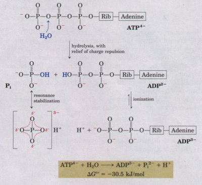
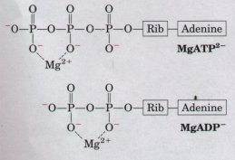
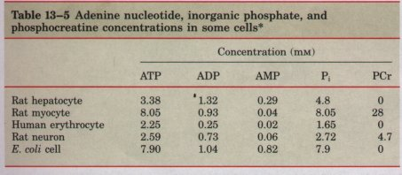
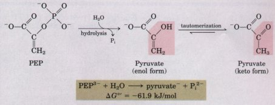
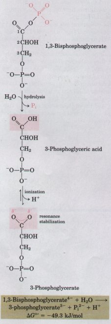
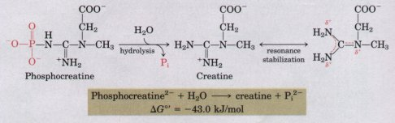
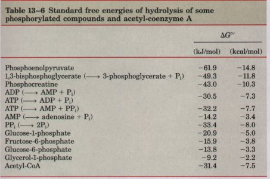
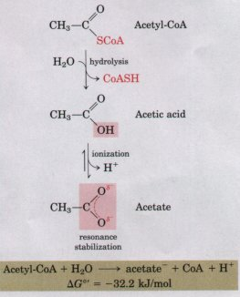
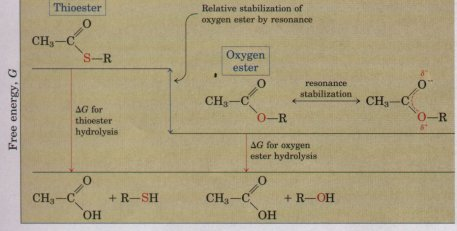

| Having developed some fundamental principles of energy changes in chemical systems, we can now examine the energy cycle in cells and the special role of ATP in linking catabolism and anabolism (see Fig. 1-13). Heterotrophic cells obtain free energy in a chemical form by the catabolism of nutrient molecules and use that energy to make ATP from ADP and Pi. ATP then donates some of its chemical energy to endergonic processes such as the synthesis of metabolic intermediates and macromolecules from smaller precursors, transport of substances across membranes against concentration gradients, and mechanical motion. This donation of energy from ATP generally involves the covalent participation of ATP in the reaction that is to be driven, with the result that ATP is converted to ADP and Pi or to AMP and 2Pi. We discuss here the chemical basis for the large free-energy changes that accompany hydrolysis of ATP and other high-energy phosphate compounds, and show that most cases of energy donation by ATP involve group transfer, not simple hydrolysis of ATP. To illustrate the range of energy transductions in which ATP provides energy, we consider the synthesis of information-rich macromolecules, the transport of solutes across membranes, and motion produced by muscle contraction. |  Figure 13-1 The chemical basis for the large freeenergy change associated with ATP hydrolysis. (1) Electrostatic repulsion among the four negative charges on ATP is relieved by charge separation after hydrolysis. (2) Inorganic phosphate (Pi) released by hydrolysis is stabilized by formation of a resonance hybrid (left), in which each of the four P-O bonds has the same degree of double-bond character and the hydrogen ion is not permanently associated with any one of the oxygens. (3) The other direct product of hydrolysis, ADP2- , also immediately ionizes (right), releasing a proton into a medium of very low [H+] (pH 7). A fourth factor (not shown) that favors ATP hydrolysis is the greater degree of solvation (hydration) of the products Pi and ADP relative to ATP, which further stabilizes the products relative to the reactants. |
Figure 13-1 summarizes the chemical basis for the relatively large, negative, standard free energy of hydrolysis of ATP. The hydrolytic cleavage of the terminal phosphoric acid anhydride (phosphoanhydride) bond in ATP separates off one of the three negatively charged phosphates and thus relieves some of the electrostatic repulsion in ATP; the Pi (HPO42-) released by hydrolysis is stabilized by the formation of several resonance forms not possible in ATP; and ADP2- , the other direct product of hydrolysis, immediately ionizes, releasing H+ into a medium of very low [H+](~10-7 M). The low concentration of the direct products favors, by mass action, the hydrolysis reaction.
Although its hydrolysis is highly exergonic (ΔG°' = -30.5 kJ/mol), ATP is kinetically stable toward nonenzymatic breakdown at pH 7 because the activation energy for ATP hydrolysis is relatively high. Rapid cleavage of the phosphoric acid anhydride bonds occurs only when catalyzed by an enzyme.
| Although the ΔG°' for ATP hydrolysis is -30.5 kJ/mol under standard conditions, the actual free energy of hydrolysis (ΔG) of ATP in living cells is very different. This is because the concentrations of ATP, ADP, and Pi in living cells are not identical and are much lower than the standard 1.0 M concentrations (Table 13-5). Furthermore, the cytosol contains Mg2+, which binds to ATP and ADP (Fig. 13-2). In most enzymatic reactions that involve ATP as phosphoryl donor, the true substrate is MgATP2- and the relevant ΔG°' is that for MgATP2- hydrolysis. Box 13-2 shows how ΔG for ATP hydrolysis in the intact erythrocyte can be calculated from the data in Table 13-4. ΔG for ATP hydrolysis in intact cells, usually designated ΔGP, is much more negative than ΔG°' in most cells ΔGP ranges from -50 to -65 kJ/mol. ΔGp is often called the phosphorylation potential. In the following discussion we use the standard free-energy change for ATP hydrolysis, because this allows convenient comparison with the energetics of other cellular reactions for which the actual free-energy changes within cells are not known with certainty. |  Figure 13-2 Formation of Mg2+ complexes partially shields the negative charges and influences the conformation of the phosphate groups in nucleotides such as ATP and ADP. |
|
BOX 13-2 The Free Energy of Hydrolysis of ATP within Cells: The Real Cost of Doing Metabolic BusinessThe standard free energy of hydrolysis of ATP has the value -30.5 kJ/mol. In the cell, however, the concentrations of ATP, ADP, and Pi are not only unequal but are also much lower than the standard 1 M concentrations (see Table 13-5). Moreover, the pH inside cells may differ somewhat from the standard pH of 7.0. Thus the actual free energy of hydrolysis of ATP under intracellular conditions (ΔGp) differs from the standard free-energy change, ΔG°' We can easily calculate ΔGp. For example, in human erythrocytes the concentrations of ATP, ADP, and Pi are 2.25, 0.25, and 1.65 mM, respectively (Table 13-5). Let us assume for simplicity that the pH is 7.0 and the temperature is 25 °C, the standard pH and temperature. The actual free energy of hydrolysis of ATP in the erythrocyte under these conditions is given by the relationship
Substituting the appropriate values we obtain
Thus ΔGp, the actual free-energy change for ATP hydrolysis in the intact erythrocyte (-51.8 kJ/mol), is much larger than the standard free-energy change (-30.5 kJ/mol). By the same token, the free energy required to synthesize ATP from ADP and Pi under the conditions prevailing in the erythrocyte would be 51.8 kJ/mol. Because the concentrations of ATP, ADP, and Pi may differ from one cell type to another (Table 13-5), ΔGp for ATP hydrolysis likewise differs. Moreover, in any given cell ΔGP can vary from time to time, depending on the metabolic conditions in the cell and how they influence the concentrations of ATP, ADP, Pi, and H+ (pH). We can calculate the actual free-energy change for any given metabolic reaction as it occurs in the cell, providing we know the concentrations of all the reactants and products of the reaction and other factors (such as pH, temperature, and the concentration of Mg2+) that may affect the equilibrium constant and thus the free-energy change. |

*For erythrocytes the concentrations are those of the cytosol (human erythrocytes lack a nucleus and mitochondria). In Lhe other types of cells the data are for the entire cell contents, although the cytosol and the mitochondria have very different concentrations of ADP. Phosphocreatine IPCr) is discussed later in this chapter.
 Figure 13-3 Hydrolysis of phosphoenolpyruvate (PEP), catalyzed by pyruvate kinase, is followed by spontaneous tautomerization of the product. Tautomerization is not possible in PEP, and thus the product of hydrolysis is stabilized relative to the reactant. Resonance stabilization of Pi also occurs, as shown in Fig. 13-1. Other Phosphorylated Compounds and Thioesters Also Have Large Free Energies of HydrolysisPhosphoenolpyruvate (Fig. 13-3) contains a phosphate ester bond that can undergo hydrolysis to yield the enol form of pyruvate, which immediately tautomerizes to the more stable keto form. Because the product of hydrolysis can exist in either of two tautomeric forms (enol and keto), whereas the reactant has only one form (enol), the product is stabilized relative to the reactant. This is the main reason for the high standard free energy of hydrolysis of phosphoenolpyruvate: ΔG°' = -61.9 kJ/mol. Another three-carbon compound, 1,3-bisphosphoglycerate (Fig. 13-4), contains an anhydride bond between the carboxyl group at C-1 and phosphoric acid. Hydrolysis of this acyl phosphate is accompanied by a large, negative, standard free-energy change (ΔG = -49.3 kJ/mol), which can be rationalized in terms of the structure of reactant and products. When H2O is added across the anhydride bond, one of the direct products (3-phosphoglyceric acid) can immediately lose a proton. Removal of this direct product favors the forward reaction and results in the formation of the carboxylate ion (3-phosphoglycerate), which has two equally probable resonance forms (Fig. 13-4). In phosphocreatine (Fig. 13-5), the P-N bond can be hydrolyzed to generate free creatine and Pi. As in the previous cases, the release of Pi favors the forward reaction. Creatine can exist in two resonance forms, and this resonance stabilization of the product favors the forward reaction. The standard free-energy change in this reaction is large, about -43 kJ/mol. |

Figure 13-4 Hydrolysis of 1,3-bisphosphoglycerate. The direct product of hydrolysis is 3-phosphoglyceric acid, with an undissociated carboxylic acid group, but dissociation occurs immediately. This ionization and the resonance structures it makes possible stabilize the product relative to the reactants. Resonance stabilization of Pi further contributes to the free-energy change. |

Figure 13-5 Hydrolysis of phosphocreatine. Breakage of the P-N bond in phosphocreatine produces creatine, which forms a resonance hybrid and is thus stabilized. The other product, Pi, is also resonance stabilized.
 Source: Data mostly from Jencks, W.P. (1976) In Handbook of Biochemistry and Molecular Biol- ogy, 3rd edn IFasman, G.D., edl, Physical and Chemical Data, Vol. I, pp. 296-304, CRC Press, Cleveland, OH. In all of the reactions that liberate Pi, the several resonance forms available to Pi (Fig. 13-1) stabilize this product relative to the reactant, further contributing to a negative free-energy change for the hydrolysis reactions. Table 13-6 lists the standard free energies of hydrolysis for a number of phosphorylated compounds. Thioesters are compounds that do not release Pi on hydrolysis but nevertheless have large, negative, standard free energies of hydrolysis. Acetyl-coenzyme A (Fig. 13-6) is a thioester that we will encounter repeatedly in later chapters. There is no resonance stabilization in thioesters comparable to that in oxygen esters (Fig. 13-7); consequently, the difference in free energy between the thioester and its hydrolysis products, which are resonance-stabilized, is greater than that for comparable oxygen esters. In both cases, hydrolysis of the ester generates a carboxylic acid, which can ionize and assume two resonance forms as described above for acyl phosphates. The free energy of hydrolysis for acetyl-CoA is large and negative, about -31 kJ/mol. |
 Figure 13-6 Hydrolysis of acetyl-coenzyme A, a thioester with a large, negative, free energy of hydrolysis. Thioesters contain a sulfur atom in the position where an oxygen atom is present in oxygen esters. (The complete structure of coenzyme A is shown in Fig. 12-41. )
Figure 13-7 The free energy of hydrolysis of thioesters is large relative to that of oxygen esters. The products of both types of hydrolysis reactions have about the same free-energy content (G), but the thioester has a higher free-energy content than the oxygen ester. Orbital overlap between the O and C atoms allows resonance stabilization in oxygen esters, but orbital overlap between S and C is poorer and little resonance stabilization occurs. |
